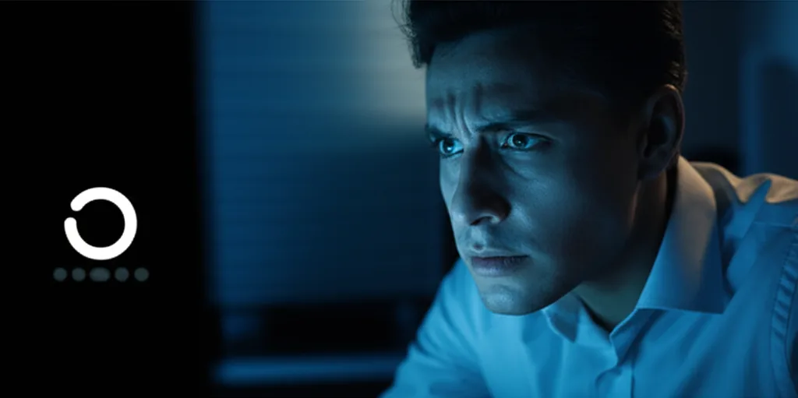
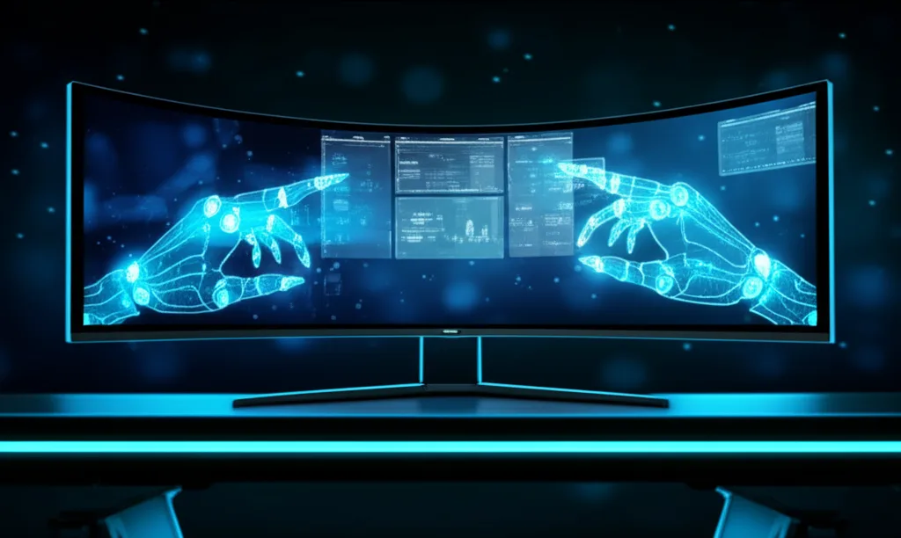
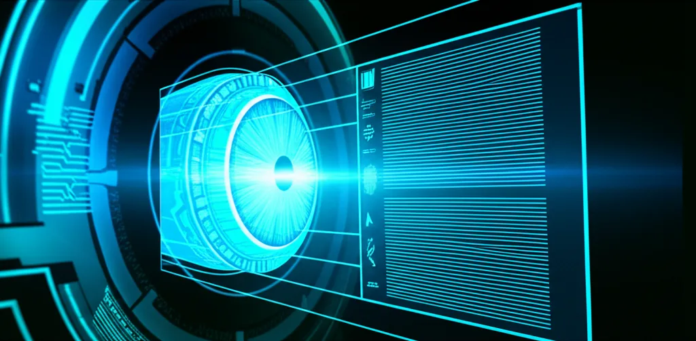
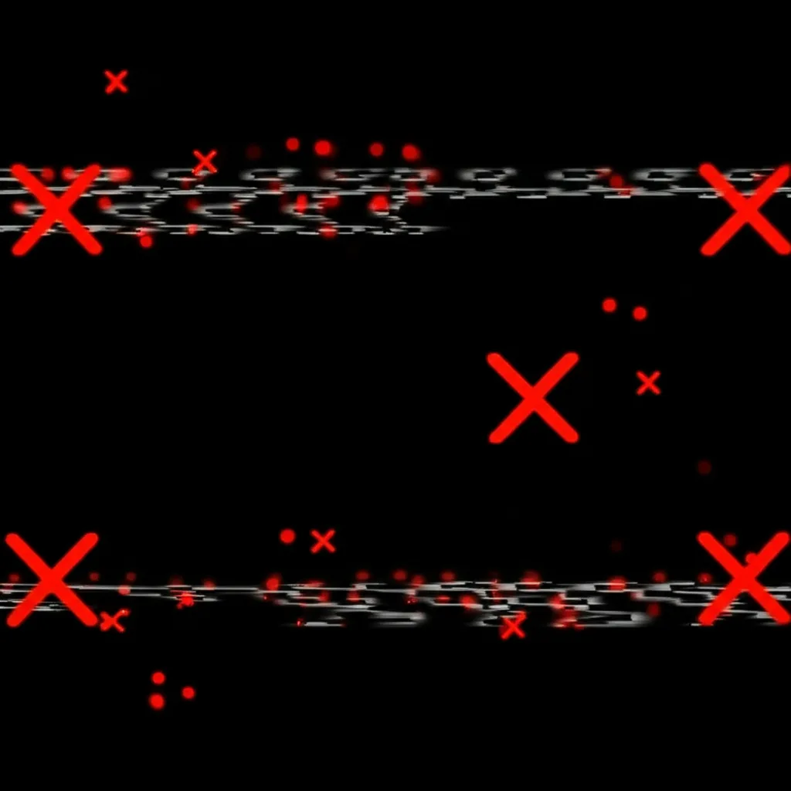
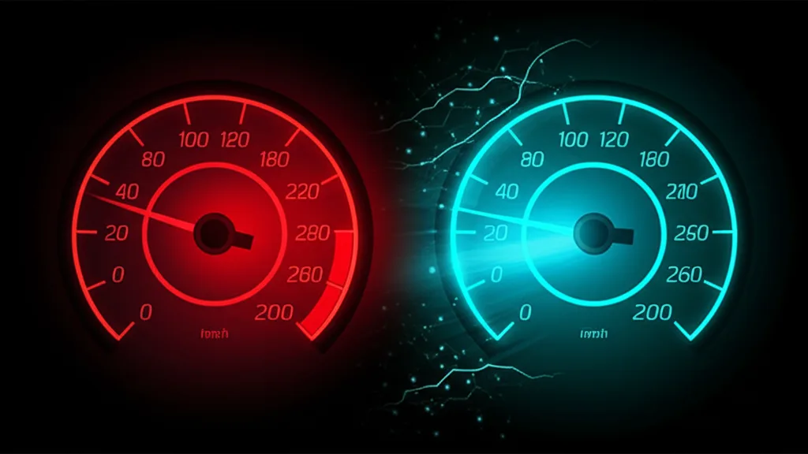
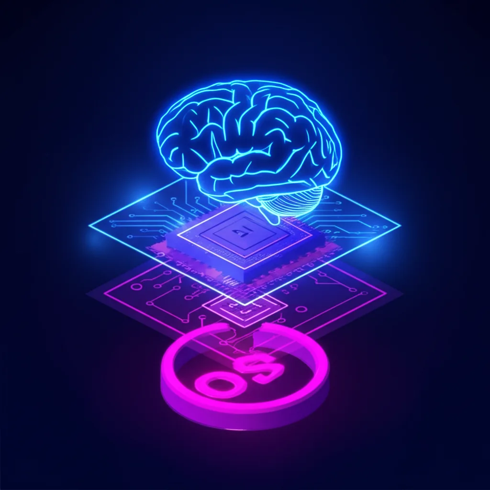

Problem 01
Screenshot AI Is 2-5s Per Action
Capture screen, send to LLM, interpret pixels, guess coordinates, click. Each step takes seconds. A 10-step workflow takes a full minute.
ScreenHand is the open-source MCP server that lets Claude and any AI agent see your screen, click buttons, type text, and control any app — on macOS & Windows. 30+ tools at native speed (~50ms per action).


Your AI assistant writes brilliant code but can't click a button. It understands workflows but can't switch between apps. It's time to fix that.

Capture screen, send to LLM, interpret pixels, guess coordinates, click. Each step takes seconds. A 10-step workflow takes a full minute.

Click at (x,y)? One window resize, one display scale change, and the AI clicks the wrong element. Coordinate guessing is fundamentally unreliable.
Chrome, Excel, Slack, Jira — each app is an isolated silo. AI can't read from one and act in another. Your desktop needs a universal interface.
ScreenHand reads the actual UI tree through OS Accessibility APIs. It knows every button, menu, and text field — instantly.
Not just pixels. ScreenHand reads the actual UI element tree through native APIs, plus Vision-framework OCR.
Click buttons by accessibility title. Resize, rearrange — ScreenHand still finds the right element.
ui_press("Save") — position-independent
Screenshot tools: capture → LLM → interpret → guess → click. ScreenHand talks to the OS directly.
A universal API for your entire desktop. Read from one app, act in another.
screenshot, screenshot_file, ocr — Full screenshots with OCR and bounding boxes.
apps, windows, focus, launch, ui_tree, ui_find, ui_press, ui_set_value, menu_click.
click, click_text, type_text, key, drag, scroll — full input simulation.
browser_tabs, open, navigate, js, dom, click, type, wait — full CDP control with React-compatible input events.
Auto-learns strategies, tracks errors, O(1) recall, background web research for fixes.
Run any AppleScript for deep macOS system integration and app scripting.
browser_stealth, browser_fill_form, browser_human_click — bypass bot detection on Instagram, LinkedIn, and more with human-like interactions.
platform_guide, export_playbook — pre-built automation guides with selectors, flows, and error solutions. Auto-generate and share playbooks from your sessions.

Everything runs on your machine. No data leaves your desktop.
Claude Desktop, Claude Code, Cursor, Codex CLI
TypeScript — routes 30+ tools, manages sessions, Chrome CDP, stealth & playbooks
Swift (macOS) · C# .NET 8 (Windows) — Accessibility APIs
# Clone & build git clone https://github.com/manushi4/screenhand.git cd screenhand && npm install npm run build:native # macOS npm run build:native:windows # Windows npm test # 95 tests
// ~/Library/Application Support/Claude/claude_desktop_config.json { "mcpServers": { "screenhand": { "command": "npx", "args": ["tsx", "/path/to/screenhand/mcp-desktop.ts"] } } }
// .mcp.json or ~/.claude/settings.json { "mcpServers": { "screenhand": { "command": "npx", "args": ["tsx", "/path/to/screenhand/mcp-desktop.ts"] } } }
// .cursor/mcp.json { "mcpServers": { "screenhand": { "command": "npx", "args": ["tsx", "/path/to/screenhand/mcp-desktop.ts"] } } }
# ~/.codex/config.toml [mcp.screenhand] command = "npx" args = ["tsx", "/path/to/screenhand/mcp-desktop.ts"] transport = "stdio"
Open source. MIT licensed. 30+ tools. Native speed. Built for MCP.